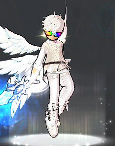
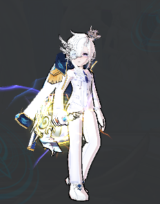
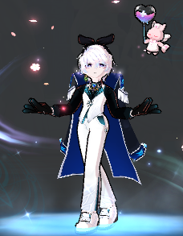
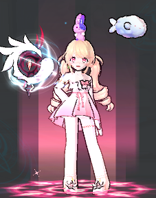

Welcome to Sky Arrow !
nơi newbie chấp cánh ước mơ
SkyArrow có thể làm được gì cho bạn?
-Giúp đỡ newbie hay oldbie chơi lại để phát triển cộng đồng server chung Elsword VN(NA server).
(hướng dẫn build đồ, hướng dẫn kĩ năng, tìm party phù hợp với khả năng hiện tại của bạn )
-Giúp đỡ bằng cách chat hoặc voice discord chứ không phải kéo dungeon vì bọn mình cũng cần farm hay lo cuộc sống riêng,tránh trường hợp ỷ lại.
-Thứ bọn mình nhắm đến là mỗi người sẽ tìm đươc người cùng farm map theo khả năng hiện tại của bản thân,cùng nhau đi lên chứ không phải là ỷ lại quá vào nhau, đa dạng party farm, không onl giờ này thì giờ khác sẽ có người cùng đi.
-Ngoài ra bọn mình còn có 3 bảng skill guild hỗ trợ cho các bạn ở mọi lĩnh vực như PVP, PVE (raid) và PVE (farm)
Thích lắm đúng hok!!. Nhưng trước tiên chúng ta cùng xem qua những người lãnh đạo của SkyArrow đã nhé.
GUILD MASTER
VVoz
warkun#0018
ADMIN
Kjera
Wolfy#7118
ADMIN
Boguette
Cat#8319
ADMIN
Ayopi
Yoshiko#1416